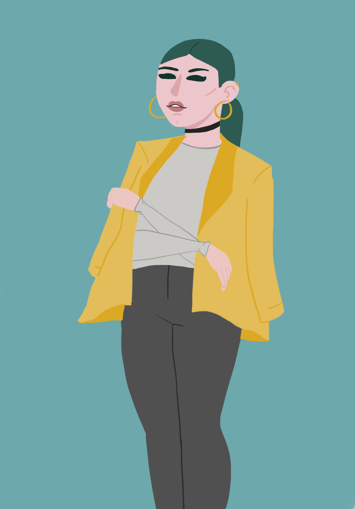
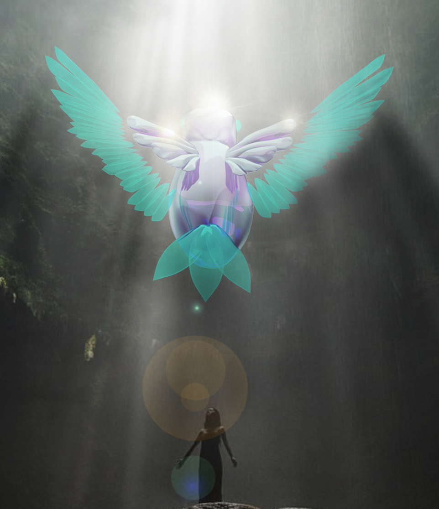

Sobre mi
Tengo 23 años, soy de la Ciudad de México. Soy estudiante en CENTRO diseño| cine | televición. Estudio la carrera de Interacción y Diseño digital. Me especializo en ilustración tradicional, vectorial, modelado 3d y animación 2D. Siempre busco nuevas maneras de aprender y superar mis expectativas en mis proyectos tanto profecionales y personales.
Mis trabajos
Aquí muestro una recopilación de mis trabajos en diferentes areas, Branding, Ilustraciñon, Modelado 3D, etc.
Branding
Este es un trabajo de rebranding que hice sobre la tienda de disfraces y maquillaje, Artist City. Para llevar a cabo este branding tenññia que buscar las palabras clave que definen a esta tienda y a que publico quiere atraer, y a base de eso darle una identidad unica.


Ilustración
Me especializo en ilustración para cualquier tipo de impresión. Utilizo programas de Adobe Photoshop e Illustrator.


Modelado 3D
Este es un projecto que trabaje con un par de programas para llegar al resultado final. El ave fue modelado en Rihno. La integración del modelo al fondo lo logré con Photoshop.
Contactame
nataliagonzest@gmail.com